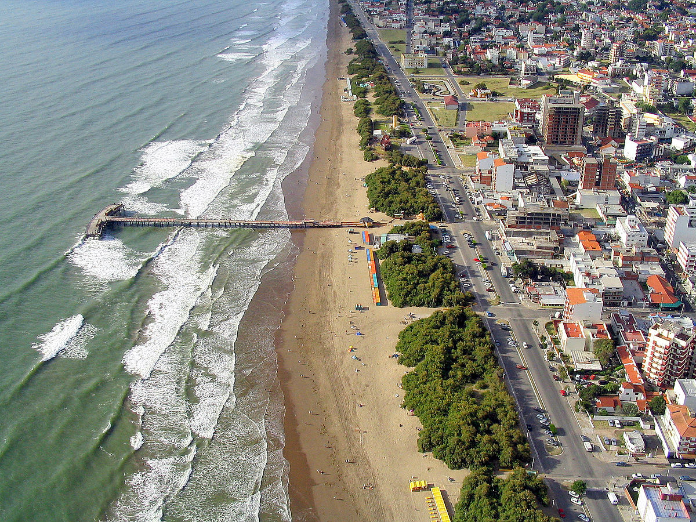

<!DOCTYPE html>
<html lang="en">
    <html>
  <head>
    <link rel="stylesheet" type="text/css" href="style.css">
  </head>
  <body>
  </body>
</html>
<link rel="icon" href="img/download.jpg">
<header>
    
    
  </header>

  
  
<head>

    <title>Santa Teresita Webpage</title>

</head>
<head>
	<style>
		@keyframes animacion {
			from { color: rgb(0, 0, 0); }
			to { color: rgb(255, 255, 255); }
		}
		.animar {
			animation: animacion 5s infinite;
		}
	</style>
</head>
<body>
	<h1 class="animar">Santa Teresita</h1>


</section>
<style>
    body {
        background-color: #39AEF1;
    }
</style>

    <p>Santa Teresita, fundada el 3 de Marzo de 1946. El sitio perfecto para unas vacaciones variadas.
        Es una ciudad cálida, acogedora que le brinda un abanico de opciones donde hospedarse,
        desde hoteles, camping, cabañas, alquileres de casas, etc. Cines, teatros, confiterías para
        todos los públicos y a toda hora. Se encuentra aquí el único aeródromo del Partido de La Costa,
        donde se efectúan todo el año vuelos de bautismo. Santa Teresita, presenta al visitante una
        multiplicidad de opciones deportivas y recreativas; la Carabela Santa María, una cancha de golf,
        escuela de salto y equitación, bosque, el muelle de pesca, aeródromo, cines, teatros, parques
        acuáticos y museos.</p>
        
		<head>
			<title>Trazo a imagen en HTML</title>
			<style>
				img {
					border: 3px solid rgb(255, 255, 255);
				}
			</style>
		</head>
	
        
    <a href="texto1.html"> <button style="background-color: black; color: white;">Mas acerca de Santa Teresita</button>
	<a href="texto2.html"><button style="background-color: black; color: white;">Hoteles</button>
	<a href="atractivos.html"><button style="background-color: black; color: white;">Atractivos</button>
	<a href="comida.html"><button style="background-color: black; color: white;">Lugares de comida</button>
	<a href="inmobiliaria.html"><button style="background-color: black; color: white;">Inmobiliarias</button>
</section>
<head>
	<title>Barra de navegación</title>
	<style>

		nav {
			background-color: #ffffff;
			color: #39AEF1;
			display: flex;
			justify-content: space-between;
			padding: 10px;
		}

		nav ul {
			display: flex;
			list-style: none;
			margin: 0;
			padding: 0;
		}

		nav li {
			margin-right: 20px;
		}

		nav a {
			color: #39AEF1;
			text-decoration: none;
		}

		nav a:hover {
			text-decoration: underline;
		}
	</style>
</head>
<p></p>
<body>
	<nav>
		<h3>Santa Teresita, Partido de la Costa </h3> 
		<ul>
			<li><a href="#">Inicio</a></li>
			<li><a href="index2.php">Registrate</a></li>
		</ul>
	</nav>

<footer>
    <a href="footer.html"></a>
    <p>&copy; 2023 Thiago Ayala. Todos los derechos reservados.</p>
    <p>Contacto: infoktyago@gmail.com</p>
</footer>
</body>

</body>
</html>